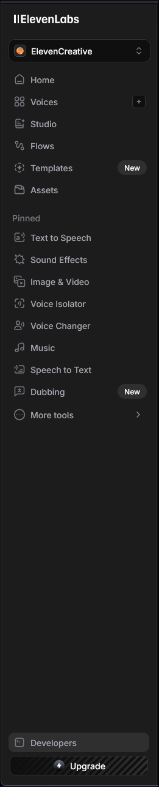
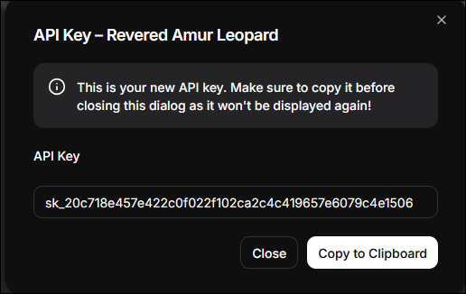

SubVox Pro — Provider setup guide
SubVox Pro never ships any API key. Every provider below is accessed with your own key,
which you paste into Tools ▸ SubVox Pro ▸ Settings (or the provider panel inside the
SubVox Pro window). Keys are stored only in your machine's Unity Editor preferences
(EditorPrefs) — never committed to your project, never bundled with a build. See
Third-Party Notices.md for the legal terms of each service.
⚠️ Free tiers and pricing change often. The figures below were accurate at the time of writing; always confirm the current offer on the provider's own pricing page before relying on it.
Quick links
| Category | Provider docs |
|---|---|
| Transcription | AssemblyAI · Gladia · Deepgram · Speechmatics · ElevenLabs · Rev AI · OpenAI |
| Translation | DeepL · Google Cloud Translation · OpenAI · Anthropic (Claude) · Google (Gemini) · DeepSeek · Hy-MT2 local |
| Dubbing / Text-to-Speech | ElevenLabs · InWorld AI · Gemini · OpenAI · Google Cloud Text-to-Speech · Azure AI Speech · Kokoro local · Chatterbox local |
| Local alignment | Qwen3 Forced Aligner |
| Reference | Best Practices · Which provider do I need? · Free-tier cheat sheet · Where to paste your key · After pasting a key |
Language compatibility at a glance
This is the language surface exposed by SubVox Pro. Dynamic catalog means the exact list comes
from the provider account and selected model/voice at runtime; the voice picker is the authoritative
list. Region variants such as en-US and pt-BR are grouped under their base language here.
| Service | Provider / engine | Languages available in SubVox Pro |
|---|---|---|
| STT | AssemblyAI | Multilingual, automatic language detection; availability follows the selected model. |
| STT | Gladia | Multilingual, automatic language detection; availability follows the selected model. |
| STT | Deepgram | Dutch, English, French, German, Hindi, Italian, Japanese, Portuguese, Russian, Spanish; plus multilingual mode. |
| STT | Speechmatics | Arabic, Chinese (Mandarin), Dutch, English, French, German, Hindi, Italian, Japanese, Korean, Polish, Portuguese, Russian, Spanish, Turkish. |
| STT | ElevenLabs | Arabic, Chinese, Dutch, English, French, German, Hindi, Italian, Japanese, Korean, Polish, Portuguese, Russian, Spanish, Turkish. |
| STT | Rev AI | Arabic, Chinese (Mandarin), Dutch, English, French, German, Hindi, Italian, Japanese, Korean, Polish, Portuguese, Russian, Spanish, Turkish. |
| STT | OpenAI (gpt-transcribe, gpt-4o-transcribe, gpt-4o-mini-transcribe, whisper-1) |
Arabic, Chinese, Dutch, English, French, German, Hindi, Italian, Japanese, Korean, Polish, Portuguese, Russian, Spanish, Turkish. |
| STT | Whisper large-v2 / large-v3 / large-v3-turbo (local) | Chinese, Dutch, English, French, German, Italian, Japanese, Korean, Portuguese, Russian, Spanish; plus auto-detect. |
| STT | Parakeet TDT 0.6B v3 (local) | Bulgarian, Croatian, Czech, Danish, Dutch, English, Estonian, Finnish, French, German, Greek, Hungarian, Italian, Latvian, Lithuanian, Maltese, Polish, Portuguese, Romanian, Russian, Slovak, Slovenian, Spanish, Swedish and Ukrainian, detected automatically. |
| Translation | DeepL | Arabic, Bengali, Burmese, Cantonese, Chinese (simplified/traditional), Czech, Dutch, English (US/UK), Filipino, French, German, Gujarati, Hebrew, Hindi, Indonesian, Italian, Japanese, Kazakh, Korean, Malay, Marathi, Mongolian, Persian, Polish, Portuguese (BR/PT), Russian, Spanish, Tamil, Telugu, Thai, Turkish, Ukrainian, Urdu, Vietnamese — the languages every translation provider supports, Hy-MT2 included. |
| Translation | Google Cloud Translation | Same target picker as above; provider/model support is validated by Google. |
| Translation | OpenAI, Claude, Gemini, DeepSeek | Same target picker as above; multilingual capability depends on the selected model. |
| Translation | Hy-MT2 1.8B / 7B (local) | Same target picker as above; every listed language is supported by the pinned models. |
| TTS | ElevenLabs | Depends on the model. Flash v2.5: Arabic, Bulgarian, Chinese, Croatian, Czech, Danish, Dutch, English, Filipino, Finnish, French, German, Greek, Hindi, Hungarian, Indonesian, Italian, Japanese, Korean, Malay, Norwegian, Polish, Portuguese, Romanian, Russian, Slovak, Spanish, Swedish, Tamil, Turkish, Ukrainian, Vietnamese. Multilingual v2: the same without Hungarian, Norwegian and Vietnamese. Eleven v3: 70+ languages, adding among others Bengali, Gujarati, Hebrew, Kazakh, Marathi, Persian, Swahili, Telugu, Thai and Urdu. |
| TTS | InWorld | Dynamic catalog — languages are read from the voices returned for your account. |
| TTS | Gemini (AI Studio key) | About 75 languages, detected from the text — including Arabic, Chinese, Dutch, English, French, German, Hindi, Italian, Japanese, Korean, Polish, Portuguese, Russian, Spanish, Turkish, Ukrainian and Vietnamese. Every voice speaks every language. |
| TTS | OpenAI (gpt-4o-mini-tts, tts-1, tts-1-hd) | About 55 languages, detected from the text — the Whisper languages, including Arabic, Chinese, Dutch, English, French, German, Hindi, Italian, Japanese, Korean, Polish, Portuguese, Russian, Spanish, Turkish, Ukrainian and Vietnamese. Voices are tuned for English but speak every language. |
| TTS | Google Cloud TTS | Dynamic catalog — languages are read from Google voices, including compatible Gemini voices. |
| TTS | Azure AI Speech | Dynamic catalog — languages are read from Azure neural voices for the configured region. |
| TTS | Kokoro (local) | English (US and UK voices). |
| TTS | Chatterbox Multilingual (local) | Arabic, Chinese, Danish, Dutch, English, Finnish, French, German, Greek, Hindi, Italian, Korean, Malay, Norwegian, Polish, Portuguese, Russian, Spanish, Swahili, Swedish, Turkish; Japanese after installing the optional Japanese support. |
| Alignment | Qwen3-ForcedAligner-0.6B Q4 ONNX (local) | Cantonese, Chinese, English, French, German, Italian, Japanese, Korean, Portuguese, Russian, Spanish. |
Provider language/model catalogs can evolve independently of SubVox Pro. Refresh the model or voice catalog in the editor when a provider adds support; for Qwen, Kokoro and Chatterbox, the fixed lists above match the pinned local models.
Chatterbox: accuracy by language
How reliably the offline Chatterbox engine says the right words, measured on 30 dubs per language (15 game-style
lines, two voices each). Every dub was transcribed back by eight speech-to-text engines, and the table keeps the
middle result for each line, so one engine mishearing does not count against Chatterbox. The lines are in
Documentation/ChatterboxAccuracyCorpus.csv (all 22 languages) if
you want to repeat the test with your own voices.
| Language | Wrong characters | Rating |
|---|---|---|
| Portuguese | 0.1 % | Excellent |
| Italian | 0.2 % | Excellent |
| Spanish | 0.4 % | Excellent |
| Hindi | 0.4 % | Excellent |
| English | 0.5 % | Excellent |
| German | 0.5 % | Excellent |
| Malay | 0.7 % | Excellent |
| Russian | 0.8 % | Excellent |
| Dutch | 1.0 % | Excellent |
| Finnish | 1.2 % | Good |
| Greek | 1.2 % | Good |
| Arabic | 1.4 % | Good |
| Swedish | 1.6 % | Good |
| French | 1.9 % | Good |
| Japanese | 2.1 % | Good |
| Chinese | 2.4 % | Good |
| Danish | 3.8 % | Review the dubs |
| Polish | 4.1 % | Review the dubs |
| Norwegian | 4.8 % | Review the dubs |
| Korean | 5.2 % | Review the dubs |
| Swahili | 5.8 % | Review the dubs |
| Turkish | 8.1 % | Review the dubs |
Generation is sampled, so two runs of the same line differ slightly; the lower the figure, the rarer a mistake. Most mistakes are a first word said wrongly or skipped. In the languages marked Review the dubs, up to one line in fifteen came out garbled (a sentence in another language, or words that do not exist): listen to the dubs and regenerate a bad line with its REGEN chip.
Best Practices
API keys are passwords for online services. Treat them as secrets, even when you are only testing.
- Create one key per tool or project. A dedicated
SubVoxProkey is easier to revoke later without breaking other tools. - Never paste API keys into source files, scenes, prefabs, support messages, Discord, GitHub issues
or commits. SubVox Pro stores keys in Unity
EditorPrefs, on your machine only, so they do not become part of the Unity project. - Copy keys immediately when the provider says they are shown once. Store them in a password manager if you need to keep a backup. If you lose a key, revoke it and create a new one.
- Use the smallest permissions available. If a provider lets you restrict a key, only enable the features SubVox Pro needs: speech-to-text for transcription providers, translation for translation providers, and TTS only for dubbing.
- Pick an expiration that matches your workflow. Short-lived keys are safer for tests and demos; longer-lived keys are more convenient for ongoing production work. Some providers also allow keys that never expire.
- Set budgets, usage limits or billing alerts when the provider supports them. This protects you from accidental loops, repeated imports, or a teammate using the wrong key.
- Rotate keys when they may have leaked. If a key appears in a screenshot, commit, chat message or build artifact, revoke it in the provider dashboard and paste the new one into SubVox Pro.
- Do not share one personal key across a team. Each teammate should use their own provider account or a team-managed key, depending on how the provider handles billing and access.
- Clear unused keys from SubVox Pro. Use the Clear API Keys button in Tools ▸ SubVox Pro ▸ Settings when you finish testing on a shared machine.
Which provider do I need?
| Feature in SubVox Pro | Providers you can use |
|---|---|
| Transcription (audio → timed subtitles) | AssemblyAI, Gladia, Deepgram, Speechmatics, ElevenLabs, Rev AI, OpenAI — or Whisper (local) and Parakeet (local) (fully offline, no key, Windows only — see Documentation.md) |
| Translation (subtitles → other languages) | DeepL, Google Cloud Translation, OpenAI, Anthropic (Claude), Google (Gemini), DeepSeek — or Hy-MT2 (local) (bundled llama.cpp engine, fully offline, no key, Windows only — see Documentation.md) |
| Dubbing / Text-to-Speech | ElevenLabs, InWorld AI, Gemini (same AI Studio key as Gemini translation), OpenAI (same key as OpenAI translation), Google Cloud Text-to-Speech, Azure AI Speech — or Kokoro (local, English) and Chatterbox (local, 21 languages + optional Japanese, voice cloning) |
| Forced alignment (exact dub word timings, text preserved) | Qwen3-ForcedAligner-0.6B Q4 ONNX (fully offline, no key, no Python/PyTorch, Windows only) |
| Human translation round-trip | Google Sheets (OAuth — see Documentation.md) |
In the editor, Tools ▸ SubVox Pro ▸ Provider Comparison shows every provider side by side: what it supports in SubVox Pro, its price, its free plan and whether that plan allows commercial use.
You only need a key for the providers you actually use. For a no-cost, no-account start, use the offline Whisper or Parakeet transcription and the offline Hy-MT2 (local) translator (or a free-tier one such as Gemini or DeepL), then dub with the offline Kokoro or Chatterbox engines, or with Gemini's free tier.
Free-tier cheat sheet
SubVox Pro works the same way with a free or a paid account: the same key, the same requests. A free plan only changes how much you can generate — and, for some providers, what you may do with the result.
| Provider | Free allowance (verify!) | Credit card required? | Commercial use on the free plan? |
|---|---|---|---|
| AssemblyAI | ~$50 one-time credit (~330 h) | No | Yes. Your data may be used to train their models unless you opt out. |
| Gladia | 10 h / month | No | Yes. Audio sent on the free plan may be used to train their models. |
| Deepgram | $200 one-time credit | No | Yes, including production use. |
| Speechmatics | $100 one-time credit | No | Yes. Transcripts may be used to improve their models. |
| ElevenLabs | ~10 min / month for voice/transcription usage | No | No — non-commercial only, and you must credit ElevenLabs. Paid plans start at about $5/month. |
| Rev AI | 5 h one-time credit | No | Not stated — check Rev AI's terms. |
| DeepL (Developer plan) | One-time 1,000,000-character credit | Card may be required to verify, not charged | Yes, but DeepL may keep the texts sent on the free API. |
| Google Cloud Translation | 500,000 chars / month + $300 trial credits | Yes (billing account) | Yes. |
| Google Cloud Text-to-Speech | 1M chars/month (Neural2/WaveNet) + 4M (Standard); Gemini/Chirp billed via Vertex AI | Yes (billing account) | Yes. |
| Azure AI Speech | F0 free tier: ~0.5M chars/month neural TTS | Card to verify, not charged on F0 | No — Microsoft grants commercial rights to the audio only on a paid (S0) resource. |
| OpenAI (STT + translation + TTS) | Prepaid (min $5); occasional trial credits | Yes | Yes (no free plan as such). For TTS, OpenAI requires telling players the voices are AI-generated. |
| Anthropic (Claude) | ~$5 trial in select regions | Yes (prepaid credits) | Yes (no free plan as such). |
| Google Gemini (translation + TTS) | Free tier, rate-limited, no billing needed | No | Yes. Google may use free-tier prompts to improve its products. |
| InWorld | One-time ~70 min of TTS | No to start | Yes — the free plan includes a commercial license. |
| DeepSeek | No standing free tier; low pay-as-you-go prices | Yes (prepaid top-up) | Yes (prepaid only). |
Commercial use means shipping what the provider generated — subtitles, translations or dubbed audio — in a game or product you sell. A game dubbed with ElevenLabs or Azure voices needs their paid plan. This column summarizes each provider's terms as of September 2026; it is not legal advice, and the provider's current terms always prevail. The offline engines (Whisper, Parakeet, Hy-MT2, Kokoro, Chatterbox, Qwen3) are free for commercial use (crediting NVIDIA for Parakeet is good practice) — see Third-Party Notices.md.
Where to paste your key in SubVox Pro
Once you have a key from any provider below, SubVox Pro gives you two equivalent places to store it.
Keys live only on this machine, in the Unity Editor preferences (EditorPrefs) — never inside the project.
Open Tools ▸ SubVox Pro ▸ Settings for a single panel that lists every provider. Paste each key into its row (the field masks the value), and use the type badges — STT (transcription), TR (translation), TTS (dubbing) — to find the right one. Clear API Keys wipes them all from this machine.

You can also paste a key straight from a provider's panel inside the SubVox Pro window. Enter the key, press Save, and an API Ready badge confirms it was accepted (Clear removes it).

Transcription providers
AssemblyAI
Used for: speech-to-text with word-level timing.
1 Go to https://www.assemblyai.com/dashboard/signup and create an account (email or SSO). No credit card is required; new accounts get roughly $50 in free credits (~330 hours).

2 After verifying your email, open Manage ▸ API Keys in the left sidebar.

3 AssemblyAI creates a Default API Key for the project. You can copy that key, or click Create new API key if you want a dedicated key for SubVox Pro.

4 If you create a new key, give it a recognizable name such as SubVoxPro or your project name, then click Create.

5 Copy the API key from the key row.

6 Paste it into SubVox Pro (Settings ▸ AssemblyAI).
Free accounts are capped at 2 projects / 2 API keys, which is plenty for SubVox Pro. Help article: https://support.assemblyai.com/articles/7562135267-how-to-get-your-api-key
Gladia
Used for: speech-to-text.
1 Sign up at https://app.gladia.io (email or Google).

2 Once logged in, open API Keys in the left sidebar. This is where Gladia lists every key attached to your account.

3 If you want a dedicated key for SubVox Pro, use the creation form and give it a recognizable name
such as SubVoxPro or your project name.

After creation, copy the key from the list. Gladia may shorten the displayed value later, so copy it immediately while you still have access to the full token.

4 Paste it into SubVox Pro (Settings ▸ Gladia).
Free tier: 10 hours of transcription per month (max 20 calls/hour, 3 concurrent). Help: https://support.gladia.io/article/how-to-get-the-api-key-from-my-account
Deepgram
Used for: speech-to-text.
1 Create an account at https://console.deepgram.com/signup — no credit card, and you receive $200 in free credits (they expire one year after signup).

2 In the Console, open API Keys from the left sidebar.

3 Click Create a New API Key.

4 Give the key a recognizable name. For Set expiration, choose whichever duration fits your workflow; SubVox Pro does not require a specific key duration.

5 Copy the generated secret and save it somewhere safe. Deepgram cannot show this secret to you again.

6 Paste it into SubVox Pro (Settings ▸ Deepgram).
Speechmatics
Used for: speech-to-text.
1 Go to the Speechmatics Portal at https://portal.speechmatics.com and create an account. The free plan gives a one-time $100 credit, with no card required.

2 In the project sidebar, open Manage ▸ API Keys.

3 Click Create new key.

4 Give the key a recognizable name, then click Generate new key.

5 Copy the key before closing the dialog. For security reasons, Speechmatics will not display it again.

6 Paste it into SubVox Pro (Settings ▸ Speechmatics).
Docs: https://docs.speechmatics.com/get-started/authentication
ElevenLabs
Used for: speech-to-text (ElevenLabs Scribe) and text-to-speech dubbing.
1 Sign up at https://elevenlabs.io (email or SSO). No credit card needed; the free tier includes a small monthly allowance (~10 minutes). The free plan is non-commercial and requires crediting ElevenLabs: dubbing a game you publish needs a paid plan.

2 Once logged in, open Developers from the left sidebar. This is where ElevenLabs groups API access, logs, webhooks and environment variables.

3 In the Developers page, select the API Keys tab and click Create Key.

4 Give the key a recognizable name. If you enable Restrict Key, make sure Speech to Text and Text to Speech are both set to Access. SubVox Pro uses Scribe for transcription and the Text-to-Speech API when generating dubbed audio.


5 Copy the generated API key before closing the dialog. ElevenLabs only shows the full value once.

6 Paste it into SubVox Pro (Settings ▸ ElevenLabs). The same token is used for ElevenLabs transcription and ElevenLabs TTS dubbing.
API reference: the Text-to-Speech endpoint uses the
xi-api-keyheader and converts text throughPOST /v1/text-to-speech/:voice_id: https://elevenlabs.io/docs/api-reference/text-to-speech/convert
Rev AI
Used for: speech-to-text.
1 Sign up at https://www.rev.ai/auth/signup. No credit card; you get 5 hours of free credits.

2 Go to the Access Token page (https://www.rev.ai/access_token). You can also reach it from the left navigation under Access Token.

3 If no token exists yet, click Generate on the Access Token page. Rev AI allows a maximum of two active tokens at a time.

4 Copy the generated token immediately. Rev AI only shows the full value once; after that, the list keeps only a shortened preview and the creation date.

5 Paste it into SubVox Pro (Settings ▸ Rev AI).
Translation providers
DeepL
Used for: high-quality machine translation (supports formality).
- Sign up for the API at https://www.deepl.com/pro-api. In the Developer plan card, choose
Sign up for free. DeepL asks you to verify your email, then to complete a payment-card
verification. The card check is used to validate the account, but the Developer plan is not charged.
The free Developer plan includes a one-time credit of 1,000,000 characters.

- Open https://www.deepl.com/your-account/keys (Account ▸ API Keys) and copy your
Authentication Key.

- Paste it into SubVox Pro (Settings ▸ DeepL). SubVox Pro handles the Free vs Pro endpoint automatically.
Help: https://support.deepl.com/hc/en-us/articles/360020695820-API-key-for-DeepL-API
Google Cloud Translation
Used for: machine translation.
- Open the Google Cloud Console at https://console.cloud.google.com and create (or pick) a project. New Google Cloud accounts get $300 in trial credits (90 days), and Cloud Translation includes 500,000 free characters/month. A billing account is required even on the free tier.
- In APIs & Services ▸ Library, search Cloud Translation API and click Enable.
- In APIs & Services ▸ Credentials, click Create credentials ▸ API key. Copy the key (and optionally restrict it to the Cloud Translation API).
- Paste it into SubVox Pro (Settings ▸ Google Translate).
Tip: set a quota/budget alert to avoid surprises once the trial credits run out.
OpenAI
Used for: speech-to-text, LLM translation (and word-style propagation across languages) and text-to-speech dubbing. One key covers all three.
- Create an account at https://platform.openai.com or sign in with an existing OpenAI account.

- In your project sidebar, open API Keys.

- Click Create new secret key.

- Name the key if you want, keep the correct project selected, choose the permissions you need, then
click Create secret key.

- Copy the key immediately. OpenAI shows the full secret only once; after closing this dialog, you
cannot reveal it again.

- Add prepaid credits from https://platform.openai.com/settings/organization/billing/overview.
You can also open the account menu, go to Organization settings or Profile settings, then
choose Billing in the settings sidebar.


- On the Billing overview, click Add to credit balance. API calls draw from this balance.

- Enter the amount to add, choose or add a payment method, then click Continue. The minimum top-up
shown in the platform is usually $5.

- Paste the secret key into SubVox Pro (Settings ▸ OpenAI). Pick the model in the translation panel. For dubbing, pick OpenAI as the provider in the Text-to-Speech tab, then the model: gpt-4o-mini-tts (13 voices, follows the voice direction), tts-1 (fast) or tts-1-hd (higher quality) — the last two offer 9 voices and ignore the voice direction. For transcription, pick OpenAI in the Speech-to-Text tab, then the model.
Transcription models — read this before picking one.
gpt-transcribe(default),gpt-4o-transcribe,gpt-4o-mini-transcribe: the best transcript (spelling, punctuation), but the OpenAI API returns no word timestamps for this family. SubVox Pro spreads the words over the sentence segments when there are any, over the whole clip otherwise, like importing a.txt: the lines are right, their timings are an estimate to nudge on the timeline.whisper-1: real word-level timings. Its words come back without punctuation, so SubVox Pro re-applies the punctuated transcript over the timed words.- The other providers (AssemblyAI, Gladia, Deepgram, Speechmatics, ElevenLabs, Rev AI, local Whisper and Parakeet) return punctuated word timings directly: prefer them when timing matters.
The transcription endpoint caps uploads at 25 MB.
OpenAI's usage policies require you to tell your players that the voices they hear are AI-generated and not human — for example in the game's credits or store page. TTS pricing: https://openai.com/api/pricing
Anthropic (Claude)
Used for: LLM translation (and word-style propagation).
- Create an account at https://console.anthropic.com or sign in with an existing Anthropic account.

- Buy usage credits before using the API. Anthropic is prepaid; without credits, API requests fail.
The console offers a low starting amount, usually 5 USD.

- In the Claude Console sidebar, open API keys.

- Click Create key.

- Choose the workspace, name the key if you want, then click Add.

- Copy the generated key immediately. Anthropic says you will no longer be able to consult the
full key after this screen.

- Paste it into SubVox Pro (Settings ▸ Claude).
Google (Gemini)
Used for: LLM translation and text-to-speech dubbing (Gemini voices) — the easiest free option (no billing required). One key covers both.
- Go to Google AI Studio at https://aistudio.google.com and sign in with a Google account.

- Open API keys directly at https://aistudio.google.com/app/apikey, then click
Create an API key.

- Name the key if you want, choose or create a project, then create the key.

- Copy the API key from the details panel.

- The key then appears in the API keys list, where you can copy, inspect usage or configure billing later.

- Paste it into SubVox Pro (Settings ▸ Gemini). For dubbing, pick Gemini as the provider in the Text-to-Speech tab: it offers 30 multilingual voices (Kore, Puck, Leda…) and the voice direction button. Three models are available: gemini-3.1-flash-tts-preview (default, most natural), gemini-2.5-flash-preview-tts (half the price when billed) and gemini-2.5-pro-preview-tts (no free tier — it needs billing).
The free tier needs no billing but is rate-limited; the limits of each model are shown in AI Studio (Rate limit page). Text-to-speech has the tightest ones — only a few requests per minute and per day. SubVox Pro waits and retries when Google says how long to wait, and stops with a clear message once the daily quota is used up. Enabling billing on the key's project lifts these limits; nothing else changes in SubVox Pro. On the free tier, Google may use your prompts to improve its products.
DeepSeek
Used for: low-cost LLM translation (OpenAI-compatible API).
- Create an account at https://platform.deepseek.com or sign in with an existing DeepSeek account.
- DeepSeek is prepaid: open Top up in the platform and add a balance before using the API. Without credit, API requests fail.
- Open API keys (https://platform.deepseek.com/api_keys) and click Create new API key. Give it a
recognizable name such as
SubVoxPro, then copy the key immediately — the full key is shown only once. - Paste it into SubVox Pro (Settings ▸ DeepSeek). Pick the model in the translation panel.
Dubbing / Text-to-Speech
ElevenLabs TTS uses the same ElevenLabs key documented above. If your key is restricted, it must include Text to Speech: Access. To use the ElevenLabs voice cloning options (Instant Voice Cloning, paid ElevenLabs plan), the key also needs the Voices permission with write access, so SubVox Pro can create, find and delete its clones. Gemini TTS uses the same Gemini key as translation (see Google (Gemini)): no OAuth and no billing account, unlike the Gemini voices of Google Cloud Text-to-Speech below. OpenAI TTS uses the same OpenAI key as translation (see OpenAI). The dedicated InWorld setup is below.
InWorld AI
Used for: generating dubbed audio (TTS) for a translated track.
1 Go to Inworld Studio (https://studio.inworld.ai) and create an account.

2 In your workspace, open API Keys from the left sidebar.

3 Click Generate new key.

4 Give the key a recognizable display name. Use Standard unless you specifically need a realtime-only key, and keep the permissions required for your Inworld TTS workflow.

5 Copy the Basic (Base64) key value.

The key also appears in the API Keys list, where you can copy it again later if needed.

6 Paste it into SubVox Pro (Settings ▸ InWorld).
The free plan is a one-time allowance of about 70 minutes of TTS and includes a commercial license. You can audition voices first in the TTS Playground. Getting-started docs: https://docs.inworld.ai/docs/tts-api/getting-started/
Google Cloud Text-to-Speech
Used for: generating dubbed audio (TTS) for a translated track. Two voice families share one connection: the classic voices (Standard, WaveNet, Neural2, Chirp/Chirp3-HD) on the Cloud Text-to-Speech API, and the Gemini voices (prebuilt names like Leda, Achird, Aoede) which are multilingual and accept a free-form style prompt — these run through the separate Vertex AI API.
Unlike the other providers, Google Cloud TTS uses OAuth sign-in, not an API key. The reason: Gemini
voices go through Vertex AI, which is IAM-gated (aiplatform.endpoints.predict); an API key carries no
IAM permissions, but your signed-in Google account does (if it owns/edits the project). One sign-in
covers both voice families.
- Open the Google Cloud Console at https://console.cloud.google.com and create (or pick) a project. New accounts get $300 in trial credits (90 days); a billing account is required even on the free tier.
- In APIs & Services ▸ Library, enable Cloud Text-to-Speech API (classic voices) and — for the
Gemini voices — Vertex AI API (
aiplatform.googleapis.com, not the legacy "AI Platform"ml.googleapis.com). Skip Vertex AI if you only need classic voices. - APIs & Services ▸ OAuth consent screen: set the User type / Audience to External (Internal
blocks personal Gmail accounts with
403: org_internal), and add your Google account under Test users. - APIs & Services ▸ Credentials ▸ Create credentials ▸ OAuth client ID, application type Desktop
app. Copy the Client ID and Client secret. (A Desktop client is required for the
http://127.0.0.1loopback sign-in — same as the Google Sheets integration.) - In SubVox Pro, open the Text-to-Speech tab, pick Google Cloud, paste the Client ID and Client secret, then click Connect… and sign in in the browser. On the "app not verified" warning (normal in Testing mode), choose Continue. (The billing/quota project is derived from the client id, so there is nothing else to enter.) Credentials and the refresh token stay on this machine (Editor preferences) — never in the project.
Then pick a voice. Classic voices show as Tier Leaf (locale) (e.g. Neural2 A (fr-FR)); Gemini voices
show as Name · Gemini and ignore the language filter (they speak every supported language). With a
Gemini voice selected, the voice direction button (speech bubble, next to the voice picker) becomes
active — type a tone like "really sad, close to mental breakdown" and it is sent as the Gemini style
prompt for every line.
Billing note: classic voices draw from the Cloud Text-to-Speech free monthly quota (≈1M characters for Neural2/WaveNet, 4M for Standard); Gemini and Chirp voices are billed through Vertex AI at a different rate. Set a budget alert. TTS pricing: https://cloud.google.com/text-to-speech/pricing
Azure AI Speech
Used for: generating dubbed audio (TTS) for a translated track, with high-quality multilingual neural voices. Uses a subscription key + region (no OAuth).
Create a Microsoft Azure account at https://azure.microsoft.com/free. Azure asks for a credit card to verify identity, but the Speech free tier (F0) is a genuine free SKU (it caps usage instead of billing), so the card is not charged on F0.
In the Azure Portal (https://portal.azure.com), click Create a resource, search Speech, and pick the tile titled Speech published by Microsoft (it has a Create button — not the third-party Marketplace offers, which say Subscribe). Click Create, then choose your subscription and resource group, a Region (remember it), a name, and Pricing tier F0 (free). Click Review + create.
Direct link to the right resource: https://portal.azure.com/#create/Microsoft.CognitiveServicesSpeechServices
When the deployment finishes, open the resource and go to Keys and Endpoint. Copy KEY 1 and note the Location/Region (e.g.
westeurope).Paste the key into SubVox Pro (Settings ▸ Azure Speech). Then in the Text-to-Speech tab, pick Azure and select the same Region from the dropdown.
The key and the region must match the same Speech resource, or Azure rejects the request with a
401. The region is the short identifier (westeurope,eastus…), picked from the dropdown — not the display name ("West Europe").
Free tier (F0): ~0.5M characters/month of neural TTS, for evaluation only — Microsoft grants commercial rights to the generated audio only on a paid (S0) resource. Switch the resource to S0 before dubbing a game you publish. Pricing: https://azure.microsoft.com/pricing/details/cognitive-services/speech-services/
After pasting a key
In the SubVox Pro window, each provider panel shows an API Ready badge once a valid key is detected. If a request fails, double-check: the key was copied in full, the account has remaining credits/quota, and your machine has network access. To wipe every stored key from this machine, use the Clear API Keys button in Tools ▸ SubVox Pro ▸ Settings.